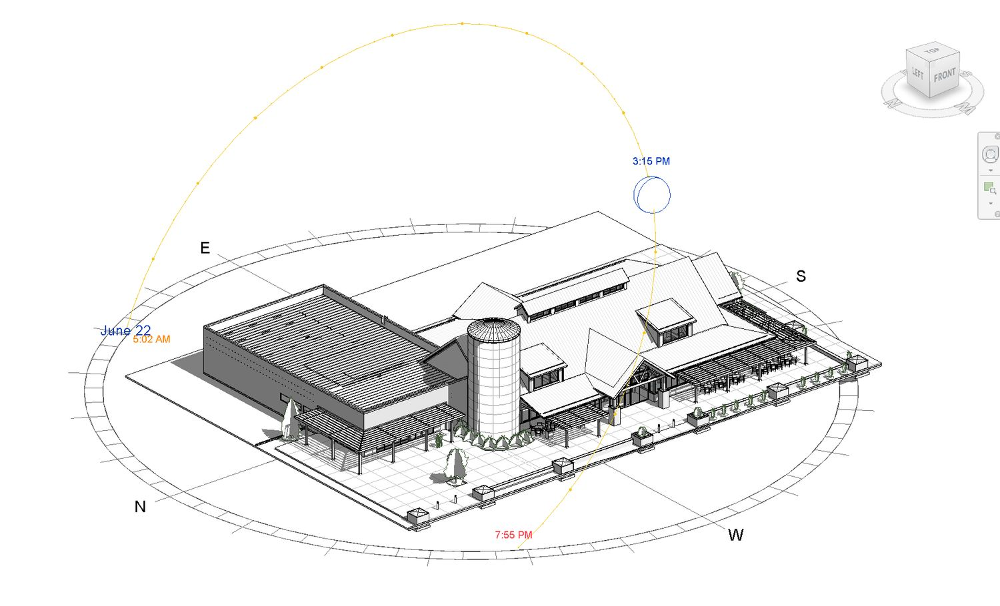
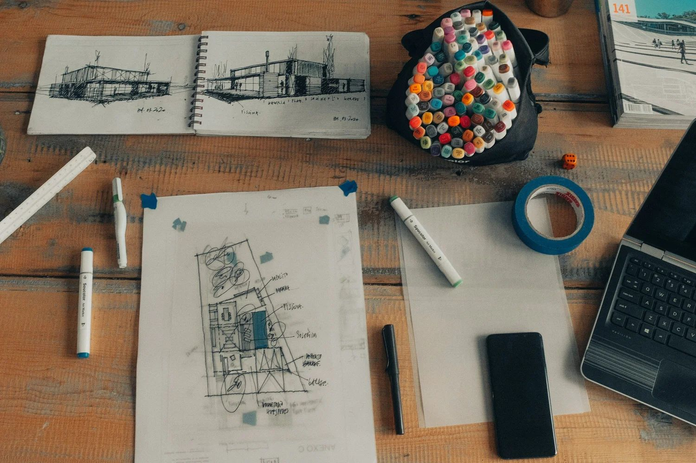
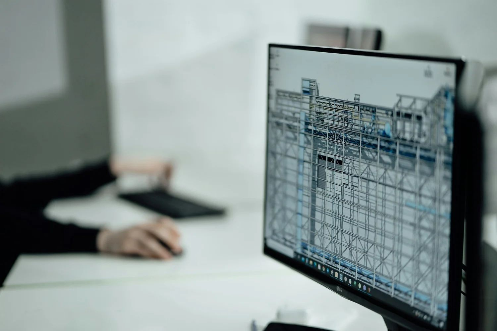
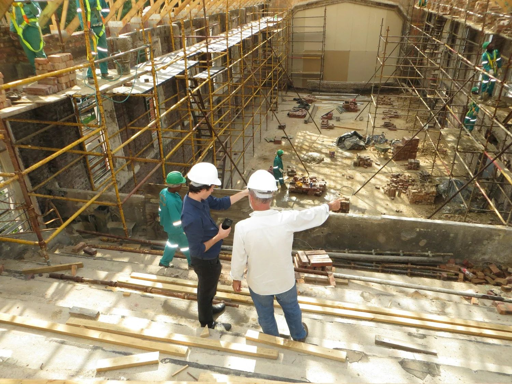
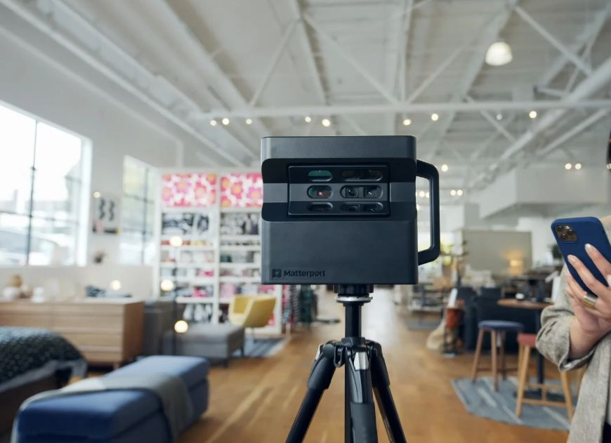
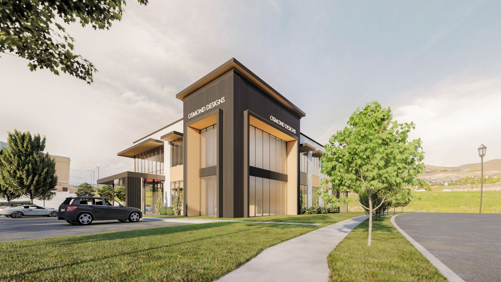
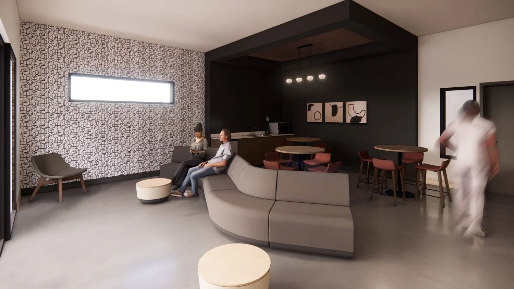

BIM
Building Information Modeling. We design in Revit, so drawings, quantities and consultants stay coordinated in one 3D model.


Our approach
Too often, the architectural and design process can feel confusing, stressful, and expensive. At Knighton Architecture, we believe it should be the opposite: rewarding, inspiring, and enjoyable.
Every project moves through three ideas and four steps. They shape how we design, how we work with you, and what we hope our buildings leave behind.
We're here to help you realize your project's potential by combining your ideas with our expertise and experience for the best possible outcome.
The initial step in each project involves identifying the design problem. This includes a comprehensive understanding of the purpose, the site, the context, the future users, and the budget.
Similarly, at our firm, we are committed to actively learning and exploring innovative approaches to assist our clients, to engage with emerging markets, and to adopt new technologies. We strive to maintain a continual understanding of the complex and dynamic world that surrounds us.
In your project

Before we start designing, we gather the information needed to begin the project. We meet with you to understand your needs, expectations, end goals, budgets, and any constraints you might have. We also study local zoning codes and regulations. If circumstances permit, we’d love to visit the site to help us understand the opportunities and challenges of your unique location.
Tools at this step

The design process can be complex and challenging. Let us guide you in transforming your idea into reality by expertly navigating zoning codes, building regulations, constructability, and feasibility.
Once the design problem is identified, the design process begins with the creation of various design concepts. These concepts are subjected to testing and review through an iterative process, leading to the selection and preparation of the final design for construction.
Our team fosters a culture of collaboration and creativity, ensuring that the best ideas win.
In your project
Once we understand the ideas and needs behind the project, we start with early conceptual design. We share ideas, explore possibilities, and give you a preview of what the project could ultimately look like. If the project is feasible and meets your needs, we move to the next phase. If a project doesn’t fit the site, or vice versa, we tweak the design together until you feel ready to proceed.
Tools at this step

This is where the real fun (and work) starts. We delve into the details of the design and address all the complex elements that bring the project to life. We offer 3D renderings and virtual walkthroughs so you can see the finished project. We coordinate the engineers who make it buildable, prepare the drawings for city approval and guide you through that process.
Tools at this step
We are committed to ensuring the final result meets your expectations.
Ultimately, the goal of every design is for that design idea to become a real place that makes a real impact in the world for good. By staying engaged with our clients through the construction process, we help the contractor to ensure the client's vision is achieved.
Our end goal as a team is to make a positive impact in the world through thoughtfully designed and constructed improvements that elevate the community and the world at large.
In your project

At this point, your project truly comes to life. We support you throughout construction as the owner’s advocate, working closely with the contractor to coordinate and resolve issues as they come up. We stay engaged and by your side until the project is ready for you to move in.
Tools at this step
04 · Technology
The tools that help you understand your project, and help us get it right. 3D scanning is done with our partners at Ridgeline Scanning.

Building Information Modeling. We design in Revit, so drawings, quantities and consultants stay coordinated in one 3D model.

We scan existing buildings and sites to capture accurate as-built conditions before design begins, with our partners at Ridgeline Scanning.

Aerial photos and video of your site for planning, progress tracking and marketing.

See the finished project, inside and out, long before construction starts.

Walk through your design at full scale in virtual reality and make decisions with confidence.
Begin now
Tell us about what you're planning. No pressure, just here to help.
Begin your new project here